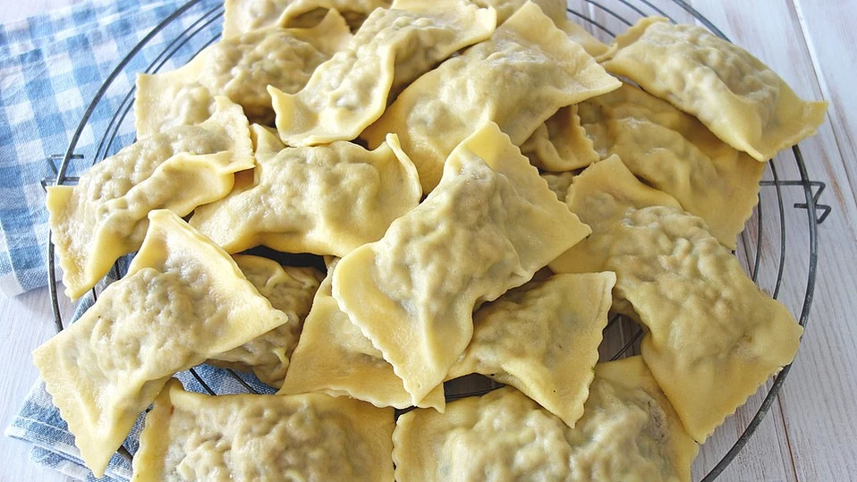

Maultaschen
 120 Min.
120 Min.
 Normal
Normal
 14.10.2025
14.10.2025
| 400 | g Mehl |
| 0.8 | TL Salz |
| 4 | Eier |
| 0.4 | Packungen Rahmspinat (TK) |
| 200 | g Hackfleisch, gemischt |
| 200 | g Mett (besser Brät) |
| 0.4 | Zwiebeln |
| 80 | g Schinken (Schwarzwälder) |
| Salz und Pfeffer | |
| Muskat | |
| Majoran | |
| Petersilie |
Zubereitung
Ca. 60 Minuten
Gesamtzeit ca. 120 Minuten
1. Aus den ersten 4 Zutaten einen Nudelteig zubereiten.
2. Die Zwiebel und den Schinken klein schneiden. Den aufgetauten
Spinat abgießen und alles gut durchmischen, mit den Gewürzen
abschmecken.
3. Den Teig in 3-4 Stücke teilen und dünn ausrollen - am besten
rechteckig. Die Fleischfüllung mit 2 Teelöffeln Häufchenweise in
Abständen auf die Hälfte vom Teig setzen, die andere Teighälfte
darüber klappen und zwischen den Häufchen gut andrücken. Mit einem
Teigrädchen in der Mitte vom angedrückten Teig die Maultaschen
"schneiden", nochmals die Ränder gut andrücken.
4. Die Maultaschen in kochendes Salzwasser geben und ca. 10
Minuten gar ziehen lassen. Dann mit kaltem Wasser gut abspülen,
sonst kleben sie gerne aneinander. Serviert werden die Maultaschen
entweder in einer klaren Brühe mit Schnittlauchröllchen oder man
kann die Maultaschen in einer Pfanne mit Zwiebeln und Ei anrösten.
5. Die Menge ergibt je nach Größe 70 - 80 Stück und lassen sich
auch sehr gut einfrieren. Statt Brät - gibt es nicht überall in
Deutschland - kann man auch Mett nehmen.
6. Traditionell gibt es die Maultaschen am Gründonnerstag.